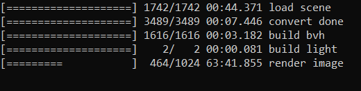
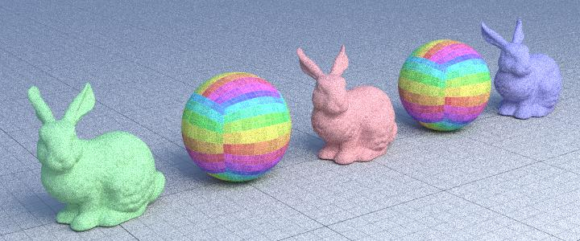

Informations about the files inside this directory
I wrote this readme file to explain how the files are distributed:
-
Inside out/naive there are all the images from 01 to 08 [Mandatory];
-
Inside out/path there are all the images from 01 to 17 [Mandatory] plus a test with refraction "05_refraction" [Extra credits];
-
Inside out/large_scenes there are all the large scenes rendered from 01 ("rungholt") to 05 ("landscape") [Extra credits];
-
Inside out/stratified there are some images rendered with "shade_stratified_sampling" [Extra credits];
-
Inside out/my_scene there are all the images for MYOS, from 01 to 05 [Extra credits] + 1 extra image(old);
-
Inside scripts there are the scripts for the first 8(naive) + 17(path) [Mandatory] exercise and the scripts for the other extra credits 1(refraction) + 5(large scenes) + 5(MYOS) + 3(Stratified) [Extra credits];
-
Inside test there are 5 more test that I have used to create images for MYOS that i create from y1 to y5 [Extra credits] there is also the JSON for the refraction that goes inside "05_glass";
-
Inside yocto_pathtrace there is yocto_pathtrace.h and .cpp .
Extra credits done:
I have done 4 extra credits:
-
REFRACTION [2 pt]: I have modify all the 6 functions (3 brdf + 3 delta) adding an if and the correct function from yocto_shading.h;
-
Large Scenes [2 pt]: I rendered all the 5 images with "-s 1024 -r 1280" for high resolution, and the render works well with 4 the scenes;
I had some problems with "bistroexterior", so I rendered it with "-s 256 -r 1024"

-
Stratified Sampling 1 [4 pt]: I created a new shader "shade_stratified_sampling" in which I use sample_hemisphere_cos and sample_hemisphere_cos_pdf to evaluate the ingoing direction and the weight;
(you can check the differences beetwen pure random and stratified moving the blue slider)
Pure random
Stratified

-
MYOS [2 pt]: I create 5 scenes (click the image to zoom in):